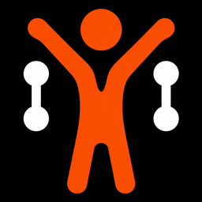

Ensemble Fitness
Explore
🔎
Members
Browse other members' profiles
›
❤️
Fitness+
Find your person
›
📓
Share Your Journey
Post your progress — live for the whole community
›
🏆
Community Challenges
Runs, walks and rides — add them to your calendar
›
🥗
Healthy Meal Prep
Meals and ideas from members
›
🎧
Music Library
Browse tracks, or by artist
›
✨
Daily Inspiration (Quote)
›
?
What do these mean?
💍 🤝
badges next to names
›
Browse by activity
💪
Working Out
›
🚶
Walking
›
🥾
Hiking
›
🚴
Biking
›
🏃
Running
›
🏊
Swimming
›
📸
Strike a Pose
›
🎨
Just Doing You
›
✨
Other
›
🏠
Home
🔍
Explore
+
Post
👤
Profile
🛒
Products